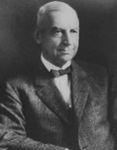

FORMER JUDGES
Judge David A. Myers
David Myers was born Cass County, Indiana on August 5, 1859. He attended Smithson
College Danville Normal College, and Union University. In 1881, he graduated from Albany
Law School in Albany. New York and moved to Greenburg to practice Law.
In 1886, Judge Myers was elected City Attorney of Greenburg. Then Prosecuting Attorney
for Decatur and Rush counties in 1890. Governor James Mount appointed
him Judge of the 8th judicial circuit. Where he served until his elected successor look office
following the election 1900.
Governor Winfield Durbin appointed Judge Myers to the Indiana Appellete Court on October 18,
1904 to fill a vacancy and he served until January 1, 1913 after winning election in 1904 and
1908.
In 1916, Judge Myers was elected to the Indiana Supreme Court and served there until
December 31, 1934.
He died in Greenburg on July 1, 1955 at the age of 95.
College Danville Normal College, and Union University. In 1881, he graduated from Albany
Law School in Albany. New York and moved to Greenburg to practice Law.
In 1886, Judge Myers was elected City Attorney of Greenburg. Then Prosecuting Attorney
for Decatur and Rush counties in 1890. Governor James Mount appointed
him Judge of the 8th judicial circuit. Where he served until his elected successor look office
following the election 1900.
Governor Winfield Durbin appointed Judge Myers to the Indiana Appellete Court on October 18,
1904 to fill a vacancy and he served until January 1, 1913 after winning election in 1904 and
1908.
In 1916, Judge Myers was elected to the Indiana Supreme Court and served there until
December 31, 1934.
He died in Greenburg on July 1, 1955 at the age of 95.
